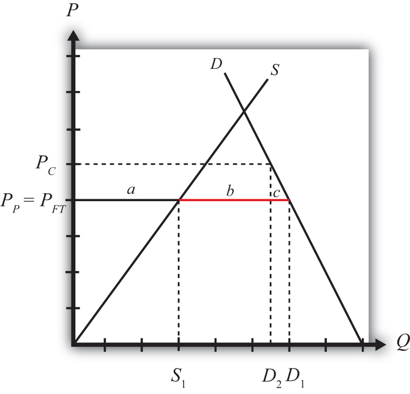

Domestic policies can affect trade in an industry for a country that is either an exporter or an import-competitor initially. In this example, we consider the price, production, and welfare effects of a consumption tax when the taxed commodity is initially imported in the country.
We depict the initial equilibrium in Figure 8.4 "A Domestic Consumption Tax in a Small Importing Country". The free trade price is given by PFT. The domestic supply is S1, and domestic demand is D1, which determines imports in free trade as D1 − S1 (the length of the red line).
Figure 8.4 A Domestic Consumption Tax in a Small Importing Country
When a specific consumption tax “t” is imposed, the consumer price will rise by the amount of the tax to PC. The higher price paid by consumers will reduce their demand to D2. The producer price will remain at the free trade price indicated at PP = PFT, and hence domestic supply will remain at S1. The tax will reduce imports from (D1 − S1) to (D2 − S1).
The welfare effects of the consumption tax are shown in Table 8.3 "Static Welfare Effects of a Consumption Tax".
Table 8.3 Static Welfare Effects of a Consumption Tax
| Importing Country | |
|---|---|
| Consumer Surplus | − (a + b + c) |
| Producer Surplus | 0 |
| Govt. Revenue | + (a + b) |
| National Welfare | − c |
Consumers suffer a loss in surplus because the price they pay rises by the amount of the consumption tax. Producers experience no change in surplus since the producer price (i.e., the price received by producers) remains at the free trade level. Note that even though imports fall, this decrease has no positive effect on producers in this situation. Finally, the government receives tax revenue from the consumption tax. The revenue is calculated as the tax, t (given by PC − PP), multiplied by the quantity consumed, D2.
Since the cost to consumers exceeds the benefits accruing to the government, the net national welfare effect of the consumption tax is negative. Although some segments of the population benefit, there remains a consumption efficiency loss, given by area c.
In the rest of the world, the small country assumption implies that this domestic policy (the consumption tax) would have no noticeable effects. Foreign prices would remain unchanged, and although their exports to this country would fall, these changes in trade volumes are too small to be noticed in the rest of the world. Thus the welfare effects on the rest of the world are said to be nonexistent, or zero.
Consider the domestic policy action listed along the top row of the table below. In the empty boxes, use the following notation to indicate the effect of the policy on the variables listed in the first column. Use a partial equilibrium model to determine the answers and assume that the shapes of the supply and demand curves are “normal.” Assume that none of the policy does not begin with, or result in, prohibitive policies. Also assume that the policy does not correct for market imperfections or distortions. Use the following notation:
+ the variable increases
− the variable decreases
0 the variable does not change
A the variable change is ambiguous (i.e., it may rise, it may fall)
Table 8.4 Effects of a Consumption Tax
| Consumption Tax on an Import Good by a Small Country | |
|---|---|
| Domestic Market Price | |
| Domestic Industry Employment | |
| Domestic Consumer Welfare | |
| Domestic Producer Welfare | |
| Domestic Government Revenue | |
| Domestic National Welfare | |
| Foreign Price | |
| Foreign Consumer Welfare | |
| Foreign Producer Welfare | |
| Foreign National Welfare |